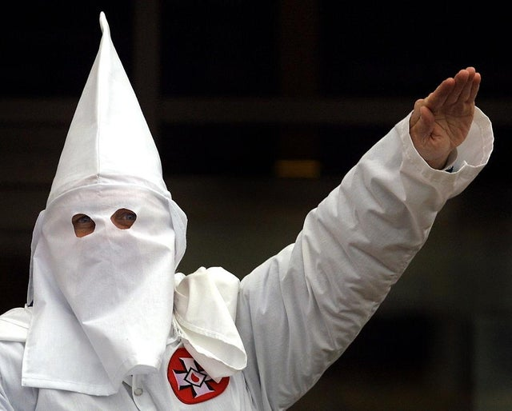

Racism, also called racialism, any action, practice, or belief that reflects the racial worldview—the ideology that humans may be divided into separate and exclusive biological entities called “races”; that there is a causal link between inherited physical traits and traits of personality, intellect, morality, and other cultural and behavioral features; and that some races are innately superior to others.
The first form of racism recorded was in between the 16th and 17th century when Christian religious hierarchy questioned whether Black and Indigenous people had souls and/or were human. Racism was also a major factor in slavery, colonization and empire-building activities of western Europeans, especially in the 18th century. At the time, race was widely used to differ Africans and Europeans by characterizing Africans as inferior beings. By the 19th century, racism had spread around the globe. Many leaders of countries started to use racism as a way of establishing superiority between races, which led to "lower" races being exploited for labour and discrimination by "higher" races. This continued on until 1948, when the Human Rights Decleration was set forth by the United Nations, which caused many people to understand that racism is wrong and denounce racist beliefs and practices. During the 1950s and 1960s, racial policies and laws were gradually eliminated in the US during the civil rights movement. Even so, racism hasn't been completely eradicated, and much of it is still practiced to this day.